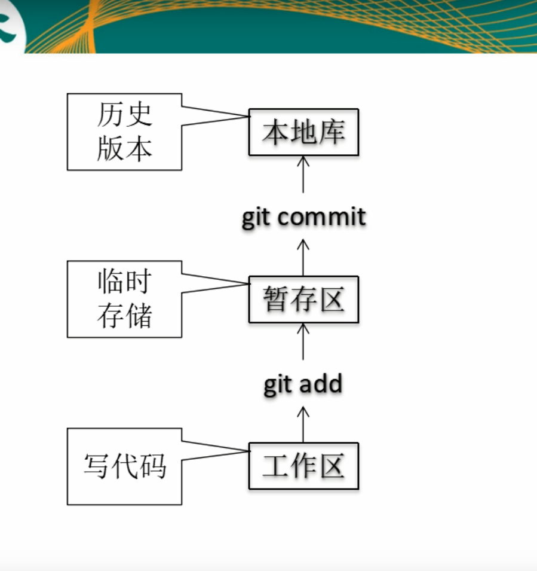
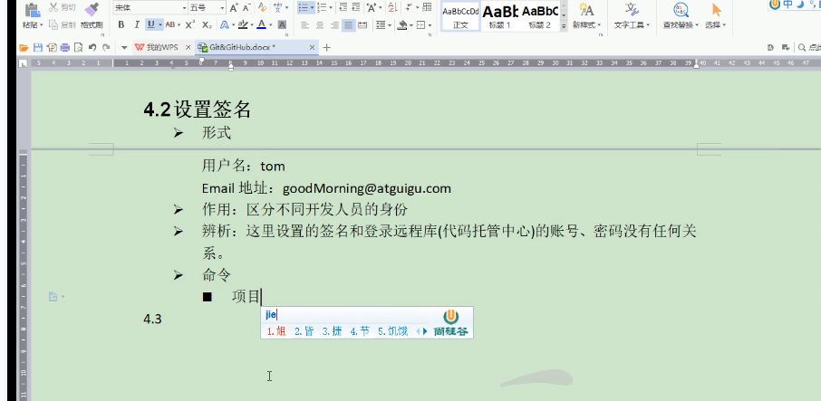
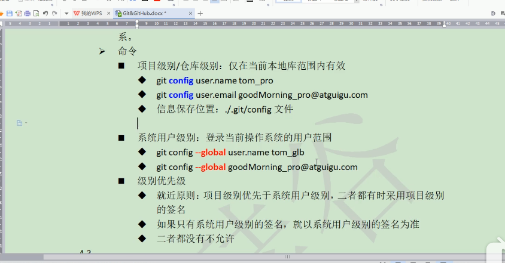

git的基本用法
git的上传操作
1.创建本地库步骤
创建本地库
命令,来到文件夹git init，初始化本地库2.内部的执行原理

3.为了区分不同人对仓库的使用，需要设置


4.ll 语法查看当前目录的所有文件夹，不包过隐藏文件夹
5.缓存区状态查看
git status //查看缓存区状态；6.初始化本地库
git init 初始化项目7.通过vim命令可以打开vim编辑器(不建议使用)
vim 文件名称 打开vim编辑器开始编辑；8.把项目添加到缓存区
git add 文件名称， 添加到缓存区9.把项目添加到缓存区
git commit 文件名 保存到本地库9.git commit -m “test github” 文件名 加上 -m “test github”就不用了进入vim编辑器，进去vim编辑器主要是添加修改的描述文件，你也可以直接通过 -m “描述” 这个方式来就不用进入vim编辑器；
git commit -m "保存到本地库的描述" 文件名10.查看是否有别名
git remote -v，11.保存远程仓库地址
git remote add origin 远程库地址 把远程库地址更改为 origin12.推送到gitgub的master分支中
git push origin master 从本地的分支master推送到远程的master中13.查看文件内容；
cat 文件名git的克隆操作
1.拿到github的仓库地址
git clone 远程库地址 (克隆还会有三个操作)
1.完整的吧远程库下载到本地
2.创建origin远程名地址
3.初始化本地库# git
本博客所有文章除特别声明外，均采用 CC BY-SA 3.0协议 。转载请注明出处！